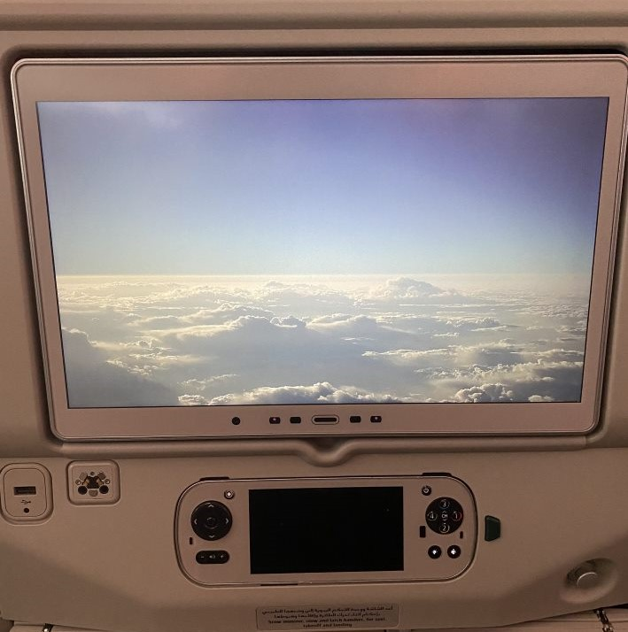
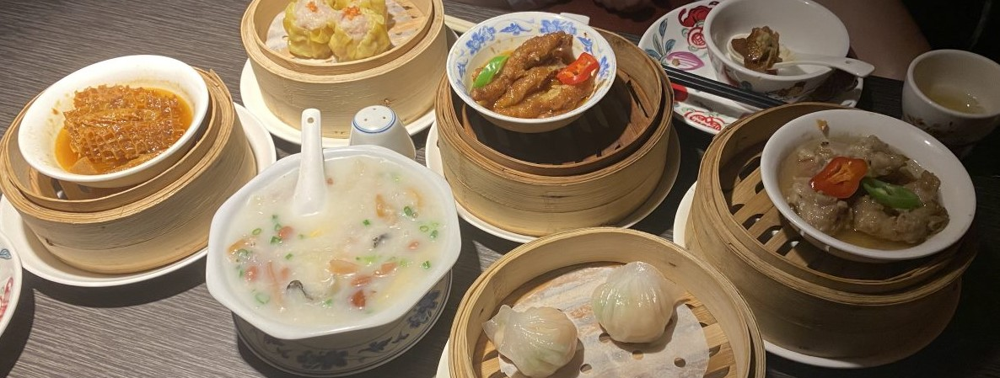
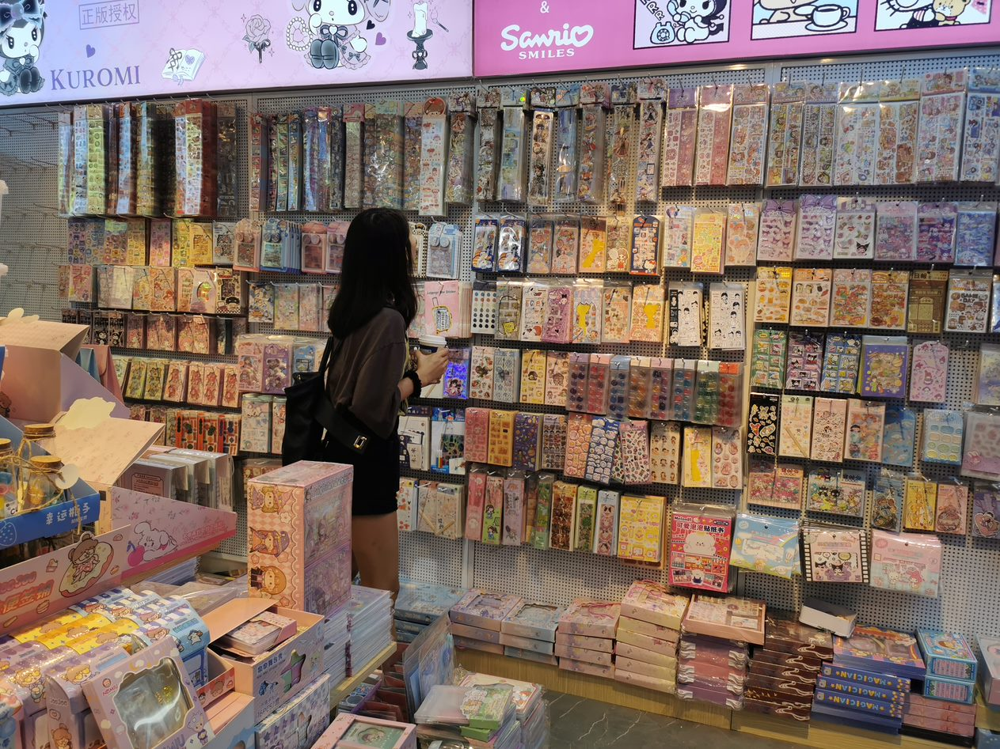
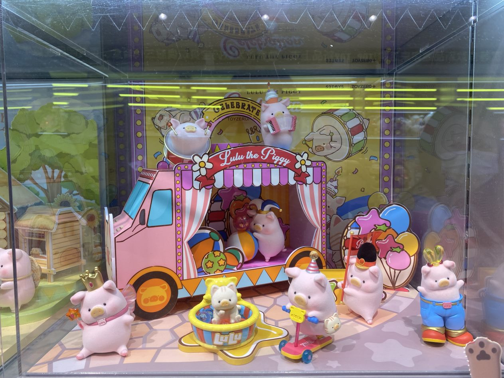
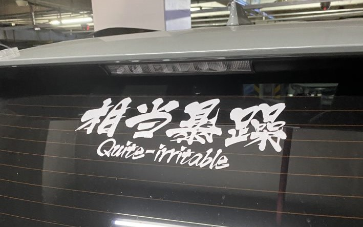
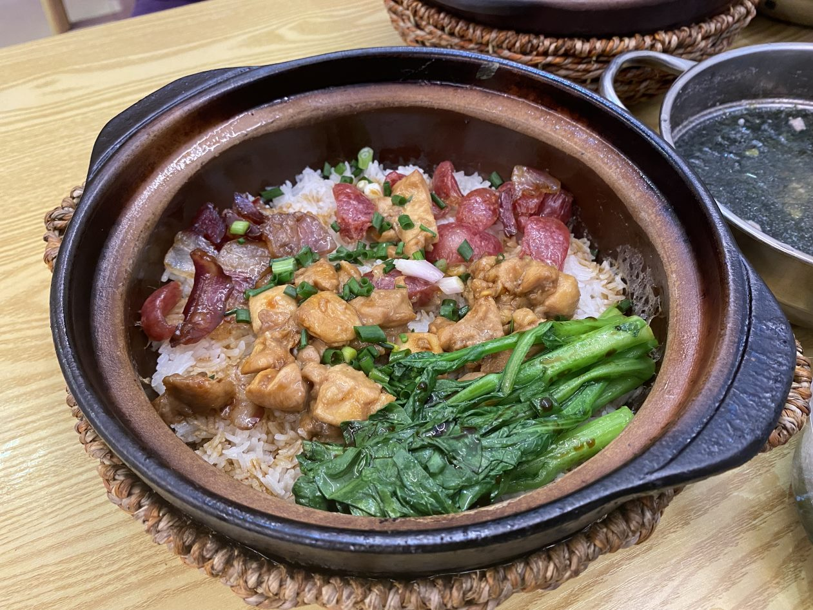
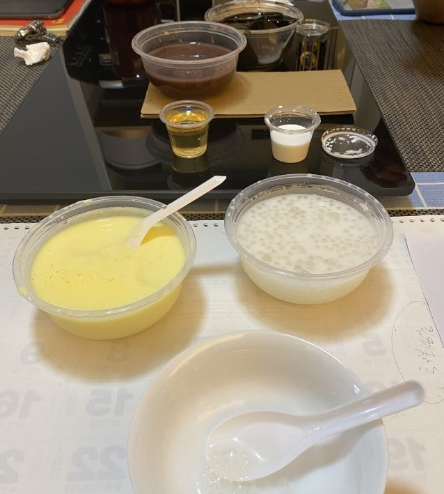
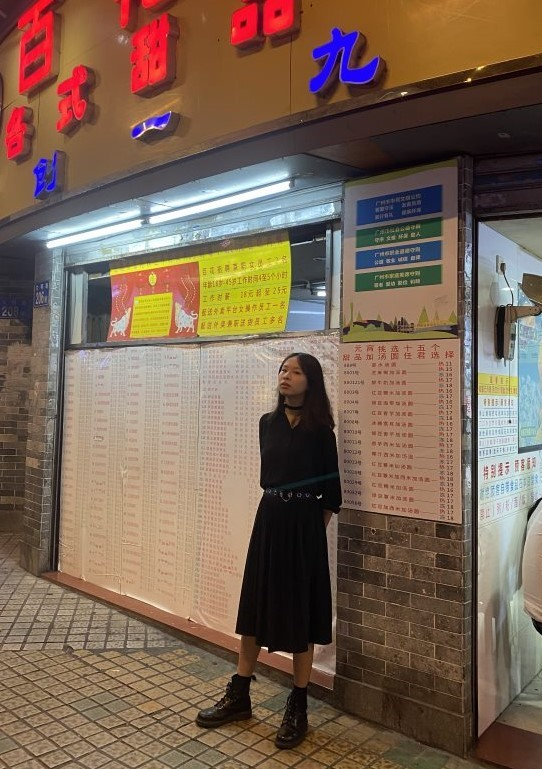

到达 The Arrival
22 Mar, 2023
The 25 hour journey was tough. And no, I don't know why it took so long either. I at least was able to enjoy the front camera view on the first plane in the dawn.

I technically got there on the night of the 21st, I think. I panicked about NordVPN not working, then went to sleep. We started the first full day with a bang, aka some dimsum from a fancy hotel, 花园酒店.
Front camera view.

We were able to find a VPN that works, so the rest of the day was less stressful. As I was promised some shopping, mum & co. took me to a shopping center. I don't know how to describe the function of the place but they just had...things. You're meant to buy things wholesale there and resale them, I think. I went on a little shopping spree for stickers, and also saw many other cute things. Cute things seem to be very popular in China (though you'd think they would be anywhere!).
Selection of dimsum.

Gatcha boxes, or blind boxes, seem popular in particular. I have (mostly) refrained from buying into them, though I can see the appeal.
kt in the sticker shop.

I also saw this car sticker, which I thought was funny.
Piggies! These are things you can get from this blind box series.

Time for dinner. This place's menu was badly optimised but I forgave them as soon as they brought the food. This is meant to be actual local cuisine, and ant's most anticipated meal (though he's not here yet).
我也相当暴躁。

Ending the day on a high, we queued at a famous local dessert place. I also took a photo with their huge menu. Did you know they were hiring exclusively female cooks between the age of 18-45 for about £2 an hour?
This was really good!

Desserts. They look underwhelming but were pretty decent.

We had to wait for people to clear to get a photo.